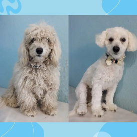
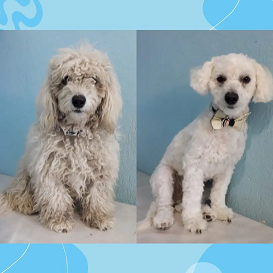

Se recomienda que los pequeños caninos hagan su primera visita a la peluquería cuando tienen
entre 3 y 4 meses, y ya han pasado por el periodo de vacunaciones. Cuanto mas cercano este a
los 3 0 4 meses es más fácil será que se acostumbren a esa situación tan diferente a la que
no están acostumbrados.


 
